2024 동계 채용연계형 인턴십 코딩테스트
👩🏻🦰 지원자 정보
- 이름: 이예지
- Github: https://github.com/yezyaa/45133953
📌 프로젝트 요약
- 프로젝트 이름: 45133953
- 프로젝트 주제: Spring Boot 기반의 게시판 및 사용자 인증 기능 개발
- 개발 기간: 2024.11.30 ~ 2024.12.04
- 사용 기술: Java 17, Spring Boot, H2 Database, Gradle, JWT
🎯 프로젝트 목표
Spring Boot를 활용하여 사용자 인증과 게시판 기능을 개발하고, 효율적인 데이터 관리 및 확장성을 고려한 프로젝트입니다.
- 기술 스택 활용: Spring Boot와 JPA를 활용한 백엔드 구현
- 사용자 인증: 회원가입, 로그인, 로그아웃
- 게시판 기능: 게시글 작성, 수정, 삭제, 상세 조회, 목록 조회 및 검색, 첨부파일 관리
- 전역예외처리: 애플리케이션 전반에서 발생하는 예외를 일관된 구조로 처리
📚 프로젝트 문서


🛠️ 개발 환경
- 백엔드: Java 17, Spring Boot, Spring Security, Spring Data JPA, JWT, Gradle
- 프론트엔드: HTML, CSS, JavaScript
- 데이터베이스: H2 Database
- 테스트: JUnit 5, Spring Boot Test, MockMvc, IntelliJ HTTP Client, Postman
- 기타: GitHub, IntelliJ IDEA
🖥️ 구현 기능
-
회원가입
설명: 사용자가 아이디(이메일), 이름, 비밀번호, 비밀번호 확인을 입력하여 계정을 생성한다.
주요 기능:
- 이메일 중복 확인
- 비밀번호와 비밀번호 확인 값 일치 검증
- 필드 값 미입력 시 유효성 검사 예외 발생
- 비밀번호 암호화 후 회원 데이터 저장
테스트:
- 회원가입 성공
- 회원가입 실패 - 중복된 이메일
- 회원가입 실패 - 유효성 검증(필드 누락)
- 회원가입 실패 - 유효성 검증(잘못된 이메일 형식)
- 회원가입 실패 - 비밀번호 불일치
- 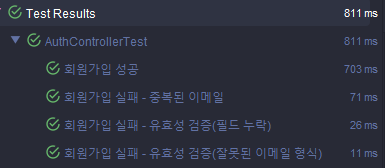
- 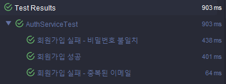
- 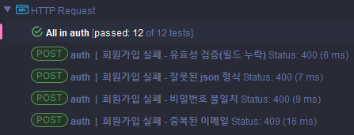
-
로그인
설명: 사용자가 아이디(이메일)와 비밀번호를 입력하여 인증을 하고, AccessToken을 발급 받아 로그인한다.
주요 기능:
- 이메일과 비밀번호 확인
- AccessToken 생성 및 발급
- 발급된 토큰을 DB에 저장
테스트:
- 로그인 성공 - AccessToken 발급
- 로그인 실패 - 존재하지 않는 이메일
- 로그인 실패 - 잘못된 이메일 형식
- 로그인 실패 - 잘못된 이메일
- 로그인 실패 - 잘못된 비밀번호
- 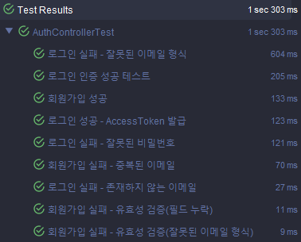
- 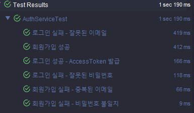
- 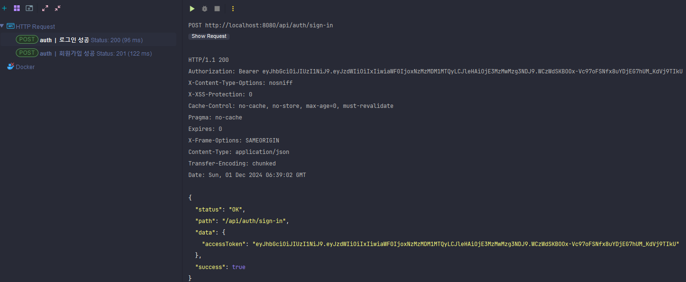
-
로그아웃
설명: 로그인한 사용자가 발급받은 AccessToken을 무효화하여 로그아웃한다.
주요 기능:
- 사용자의 AccessToken 삭제
테스트:
- 로그아웃 성공
- 로그아웃 실패 - 유효하지 않은 토큰
- 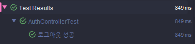
- 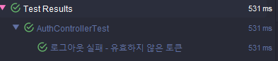
-
게시글 작성
설명: 로그인한 사용자는 게시글을 작성한다.
주요 기능:
- 비로그인 시 로그인 페이지로 이동
- 제목과 내용을 입력받아 게시글 생성 후 게시글 목록으로 리다이렉트
- 첨부파일이 있는 경우 최대 5개 업로드 가능
테스트:
- 게시글 작성 성공 - 첨부파일 미포함
- 게시글 작성 성공 - 첨부파일 포함
- 게시글 작성 실패 - 첨부파일 6개 초과
- 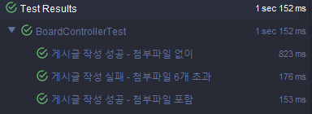
- 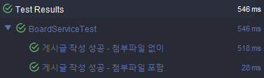
- 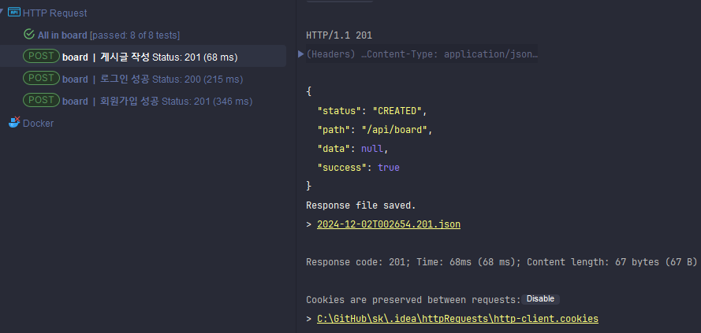
-
게시글 수정
설명: 본인이 작성한 게시글만 수정이 가능하다.
주요 기능:
- 제목, 내용 수정
- 첨부파일 추가/삭제
테스트:
- 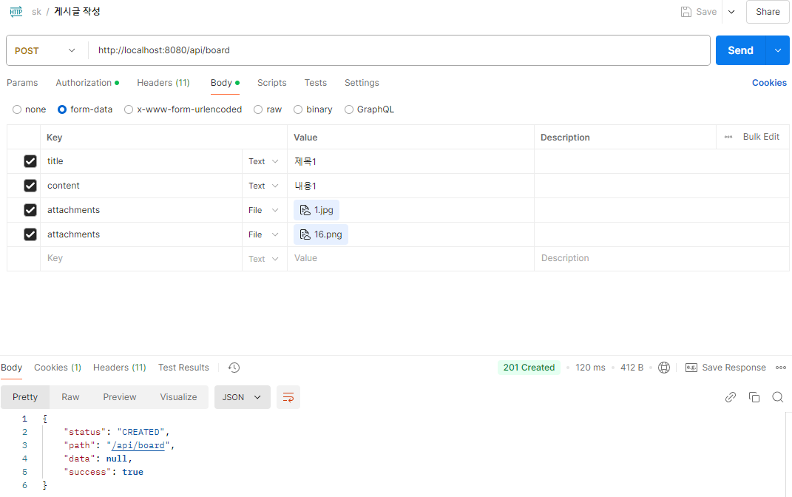
- 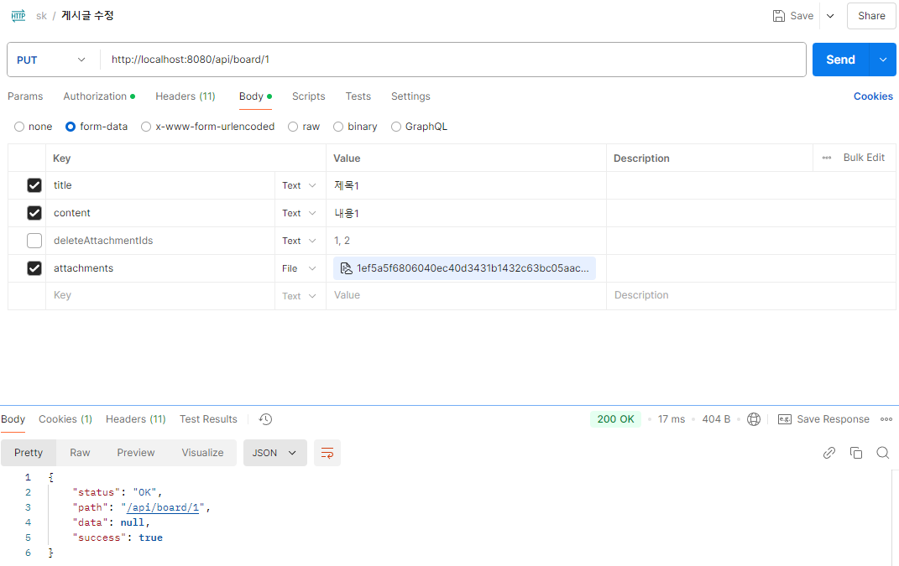
- 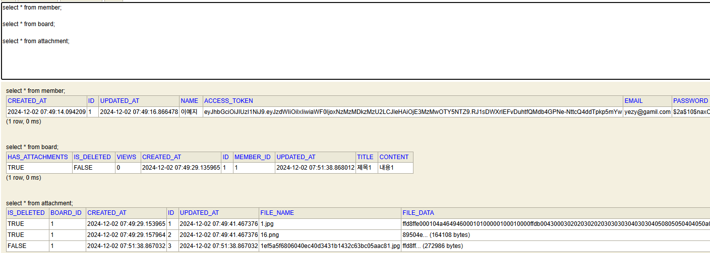
-
게시글 삭제
설명: 본인이 작성한 게시글만 삭제가 가능하다.
주요 기능:
- 소프트 딜리트 방식으로 삭제 처리
- 삭제된 게시글은 조회 불가
테스트:
- 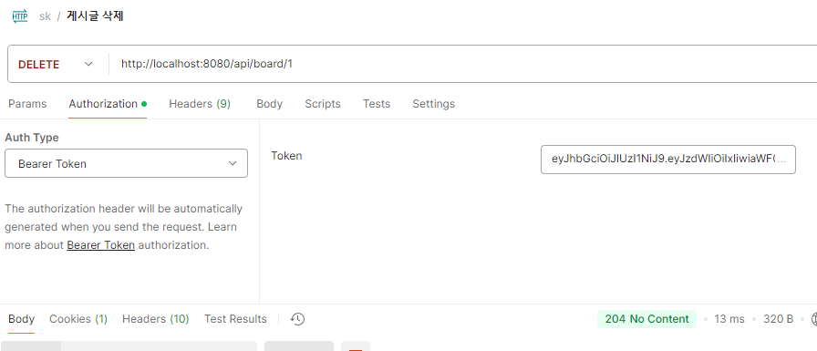
-
게시글 상세 조회
설명: 모든 사용자는 특정 게시글을 조회한다.
주요 기능:
- 게시글을 조회할 때마다 조회수 1 증가
테스트:
- 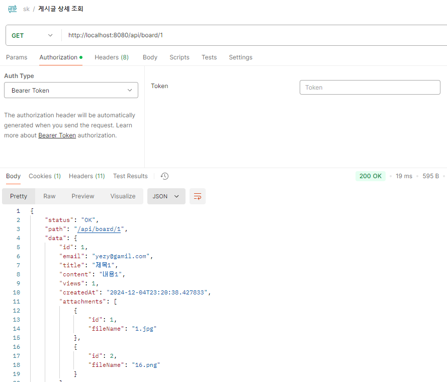
-
게시글 목록 조회 및 검색
설명: 모든 사용자는 게시글의 목록을 조회하고, 사용자의 아이디(이메일) 또는 제목으로 게시글을 검색한다.
주요 동작:
- 검색 조건: 아이디(이메일) 또는 제목
- 게시글 정렬: 최신순
- 1페이지당 10개 목록 조회하는 페이지네이션 기능
테스트:
- 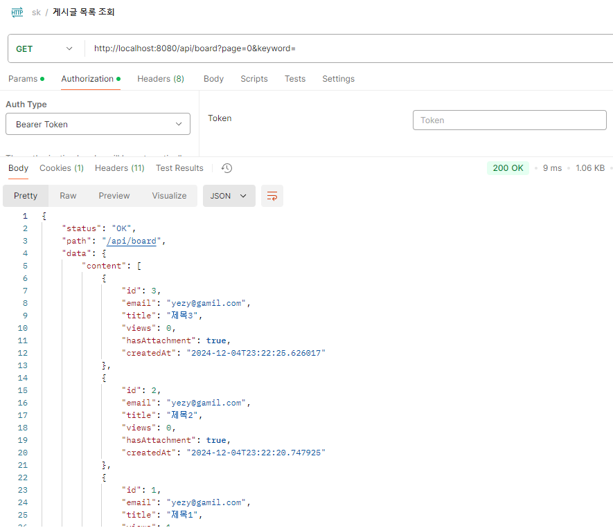
- 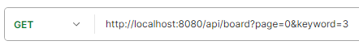
- 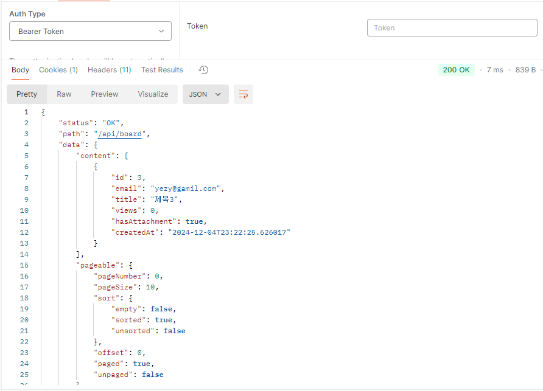
-
예외 처리
설명: 전역 예외 처리를 구현하여 애플리케이션 전역 발생하는 예외를 중앙에서 관리한다.
주요 동작:
- 비즈니스 로직의 커스텀 예외 검증
- 이메일 중복, 비밀번호 미입력 등 유효성 검증
- JSON 유효성 검증
📃 컨벤션
커밋 메세지
<type>: <subject> <BLANK LINE> <body> 예시 feat: 회원가입 기능 구현 - 회원 데이터 저장 로직 추가 - 중복 이메일 검증 로직 구현
커밋 키워드
| 타입 | 내용 |
|---|---|
| feat | 새로운 기능에 관한 커밋 |
| enhance | 기능 개선, 정책 변경으로 인한 기능 수정 등의 커밋 |
| refactor | 기능 변경이 없는 코드 리팩토링에 관한 커밋 |
| perf | 성능 개선에 관한 커밋 |
| test | 테스트 코드에 관한 커밋 |
| fix | 버그 수정에 관한 커밋 |
| revert | 잘못된 커밋을 되돌리는 커밋 |
| deps(x) | 의존성 추가 혹은 변경에 관한 커밋 |
| build | 빌드 관련 파일 혹은 모듈 설치, 삭제에 관한 커밋 |
| ci | ci 관련 설정에 관한 커밋 |
| docsvv | 문서에 관한 커밋 |
| config | 프로젝트 환경 설정에 관한 커밋 |
| style | 코드 스타일 혹은 포맷 등에 관한 커밋 |
| chore | 자잘한 수정에 대한 커밋 |
패키지 구조
- domain: 핵심 비즈니스 로직 계층
- api: 외부와 데이터를 주고받는 계층 (Controller 및 Dto)
- application: 비즈니스 로직 처리 서비스 계층
- repository: 데이터베이스 접근 계층
- exception: 커스텀 예외 처리 계층
- global: 공통 구성 요소 계층
- config: 전역 설정
- dto: 공통적으로 사용되는 Dto 클래스
- exception: 전역 예외 처리
- security: 인증 및 보안 관련 클래스